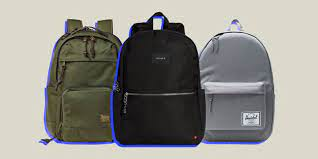

Bags
A bag (also known regionally as a sack) is a common tool in the form of a non-rigid container. The use of bags predates recorded history, with the earliest bags being lengths of animal skin, cotton, or woven plant fibers, folded up at the edges and secured in that shape with strings of the same material. .

baggs
The use of bags predates recorded history, with the earliest bags being lengths of animal skin, cotton, or woven plant fibers, folded up at the edges and secured in that shape with strings of the same material. .
baggs
The use of bags predates recorded history, with the earliest bags being lengths of animal skin, cotton, or woven plant fibers, folded up at the edges and secured in that shape with strings of the same material. .
- Bags
- Clutch
- andbags
- Tote bags
- Messenger bags